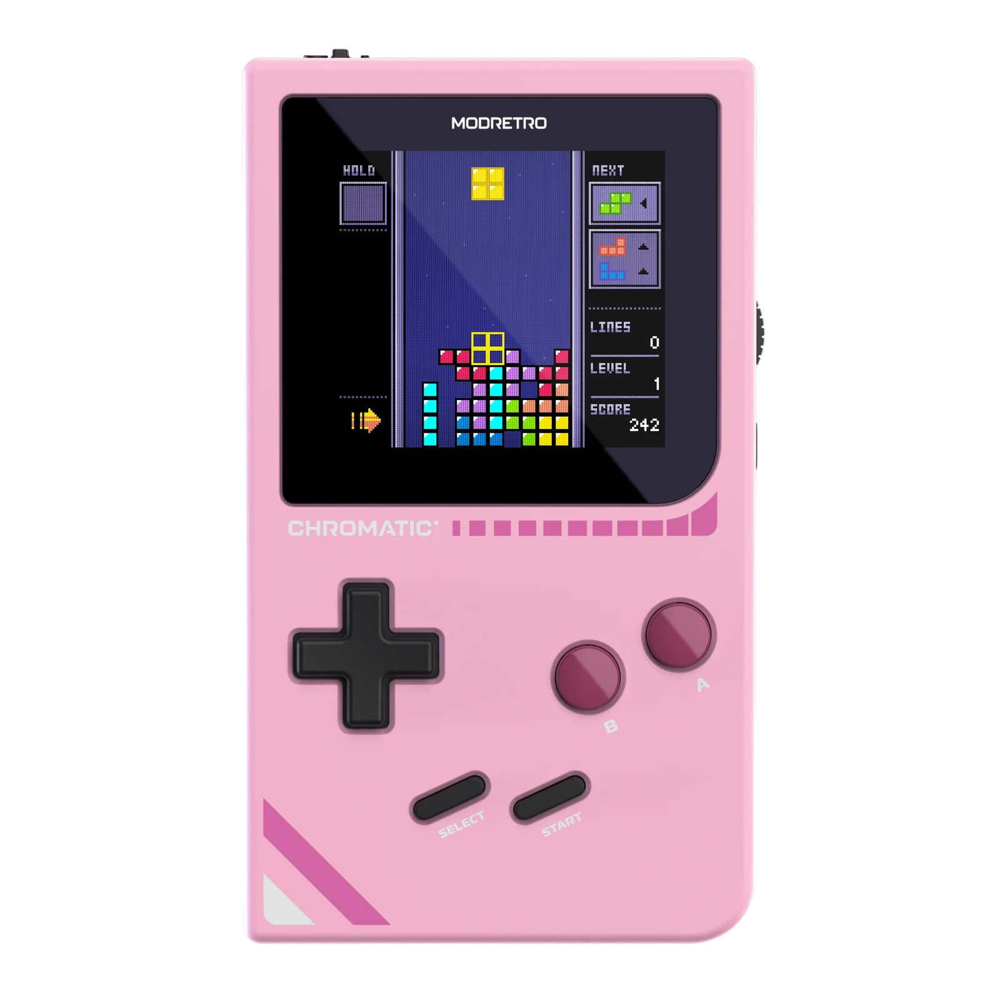

Fetch Frenzy
Download ROM
Click the console to use your keyboard, or press its buttons.
- Move
- Arrows
- A
- X / Space
- B
- Z
- Start
- Enter
- Select
- M
Loading Fetch Frenzy

Click the console to use your keyboard, or press its buttons.
Loading Fetch Frenzy